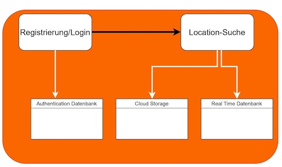

Projekt Places
Fach: Web Entwicklung 2024
Arbeit ausgeführt von:
Arman Movsisian (Matrikelnummer 77211975011)
Lasse Barke (Matrikelnummer 77211920273)
Präsentation: Places
Eidesstattliche Erklärung
Die genannten Teammitglieder erklären an Eides statt:
Diese Arbeit wurde selbständig und eigenhändig erstellt. Die den benutzten Quellen wörtlich oder inhaltlich entnommenen Stellen sind als solche kenntlich gemacht. Diese Erklärung gilt für jeglichen Inhalt und umfasst sowohl diese Dokumentation als auch den als Projektergebnis eingereichten Quellcode.
Projektbeschreibung
Places ist eine Web Anwendung, welche vom grundlegenden Design an Airbnb o.ä. erinnert. Das Ziel ist es, alle potenziell interessanten Locations in einer App zu vereinen und mit einem Suchalgorithmus zugänglich zu machen. Dies erreichen wir, indem wir mit der App alle interessanten Drehorte in einem Interface darstellen und sie mit Tags versehen. Die Tags helfen dann dabei, mit einem Filter nur die Orte herauszusuchen, welche für den jeweiligen Dreh oder das Shooting passend sind. Neben den Filtern gibt es zahlreiche weitere Funktionen, um z.B. die Adresse, den Preis etc. einzusehen oder eigene Orte hochzuladen.
Problem
Jede content-schaffende Person im Bereich der Musikvideos benötigt für eigentlich jedes Projekt drei Dinge:
- 1. Das Equipment
- 2. Den Künstler
- 3. ≥ 1 Drehort
Vor allem der dritte Punkt gestaltet sich gerade für kleine Produktionen häufig am schwierigsten, da für viele beliebte Drehorte eine Drehgenehmigung erforderlich ist, welche wiederum hohe Kosten verursacht, oder ein extremer Zeitaufwand für das Scouting der Locations nötig ist, bis man etwas einigermaßen Passendes gefunden hat.
Aus eigener Erfahrung können wir sagen, dass es oft darauf hinausläuft, dass man sich stundenlang durch die Straßen Berlins und Umgebung begibt, um einen Ort zu finden, welcher zum Stil des Videos passt.
Value Proposition
Zielgruppe:
- 1. Kleine Video- und Filmproduktionen
- 2. Fotografen
- 3. Hobby-Content-Creator
Geographischer Fokus:
Zunächst auf den Raum Berlin beschränkt
Places bietet eine zielgerichtete und einfache Suche nach geeigneten Drehorten. Das Finden des perfekten Drehortes kann ein zeitaufwändiger und kostspieliger Prozess sein, insbesondere wenn viele beliebte Orte teure Drehgenehmigungen erfordern. Unsere Plattform vereinfacht das Location-Scouting durch:
- 1. Umfassende Datenbank: Zugriff auf eine Vielzahl potenzieller Dreh- und Fotolocations, die speziell auf Ihre Bedürfnisse zugeschnitten sind.
- 2. Benutzerfreundliche Suche: Filtern Sie Orte nach spezifischen Kriterien wie Szenerie, Ausstattung und Zugänglichkeit, um schnell den perfekten Ort zu finden.
- 3. Kostengünstige Lösungen: Entdecken Sie weniger bekannte Orte, die keine teuren Genehmigungen erfordern, und bleiben Sie im Budget.
- 4. Zeitersparnis: Verbringen Sie weniger Zeit mit der Suche nach Locations und mehr Zeit mit der Erstellung von Inhalten dank unseres optimierten Scouting-Prozesses.
- 5. Lokale Einblicke: Profitieren Sie von detaillierten Informationen und Bewertungen zu jedem Ort, die von anderen Kreativen und lokalen Experten bereitgestellt werden.
Indem sich Places zunächst auf Berlin konzentriert, streben wir an, die bevorzugte Ressource für Content Creator zu werden, die den perfekten Hintergrund für ihre Projekte suchen und den Prozess der Location-Suche so effizient und kostengünstig wie möglich gestalten möchten.
MVP
- 1. Datenbank aller Locations
- 2. Darstellung der Orte auf der Website
- 3. Einfachen Zugang ermöglichen
Zeitplan
Erste Phase
Die erste Phase begann am 1. Mai und bestand aus der Technologie-Spezifikation, z.B. Auswahl der geeigneten Datenbank und der zu verwendenden Funktionen. Es gab auch eine Designphase, in der die Benutzeroberfläche entworfen wurde, und eine Präsentation, bei der wir unser Projekt vorstellten. Am Ende der ersten Phase hatten wir bereits die Login- und Registrierungsfunktion (verbunden mit der Datenbank) und die Hauptseite implementiert. Für die Strukturierung unseres Projekts und die Dokumentation nutzten wir die Notion-Website. Weitere Details können hier eingesehen werden.

Zweite Phase
Die zweite Phase begann am 15. Juli. In dieser Phase wurde die Datenbank vollständig gefüllt, der Code für die Favoriten-Seite geschrieben, das Tagging-System für die Locationsuche implementiert und Pop-up-Fenster für jede Location erstellt. Außerdem wurde die Webseite mit der Dokumentation erstellt.
App Architecture
Client-Side
- JavaScript: Wird für die DOM-Manipulation, Ereignisbehandlung und asynchrone HTTP-Anfragen verwendet.
- HTML: Bietet die Struktur für die Seiten, einschließlich modaler Dialoge und Formulare für Anmeldung und Registrierung.
- CSS: Stilt die Elemente, einschließlich der Filterleiste, Schaltflächen, Dialoge und Karte.
- Mapbox GL JS: Für interaktive Karten, Benutzerstandortvisualisierung und geografische Funktionen.
- Firebase: Für Authentifizierung und Echtzeit-Datenbankfunktionen.
Server-Side
- Flask: (Anhand der Vorlagentags und Struktur angenommen) Für die Handhabung von Routing, Rendering von Vorlagen und Bereitstellung statischer Dateien.
- Firebase: Backend-Dienste zur Speicherung von Benutzerdaten, Verwaltung der Authentifizierung und Synchronisierung von Benutzeraktionen mit der Datenbank.
Design Decisions
Client-Side
- Event Listeners: Umfangreich verwendet, um Benutzerinteraktionen wie Klicks, Eingabeänderungen und Laden von DOM-Inhalten zu behandeln.
- Fetch API: Wird für HTTP-Anfragen an den Server verwendet, um eine nahtlose Benutzererfahrung mit asynchronen Operationen zu gewährleisten.
- Geolocation: Nutzt die Geolocation-API des Browsers, um den Standort des Benutzers zu erfassen und zu speichern, was die Personalisierungsfunktionen der App verbessert.
- Mapbox Integration: Bietet eine leistungsstarke und interaktive Kartenoberfläche, damit Benutzer Standorte visualisieren und geografische Filter anwenden können.
UI Components
- Filter Bar: Ermöglicht es Benutzern, Standorte basierend auf verschiedenen Kriterien (geografischer Radius, Typ, Thema, Anwendungsfall) zu filtern. Jede Filtertaste löst einen Dialog für detaillierte Auswahlen aus.
- Modals: Werden für die Anmeldung, Registrierung und Anzeige detaillierter Standortvorschauen mit Bildern verwendet. Dies verbessert die Benutzererfahrung, indem mehr Informationen bereitgestellt werden, ohne die Hauptseite zu verlassen.
- Carousel: Zum Anzeigen mehrerer Bilder innerhalb von Standortvorschauen auf eine elegante und benutzerfreundliche Weise.
Firebase
- Authentication: Verwalten von Benutzeranmeldungen und -registrierungen und gewährleisten des sicheren Zugriffs auf personalisierte Funktionen.
- Real-Time Database: Speichert Benutzerdaten wie Profilinformationen und Standortpräferenzen und ermöglicht die Echtzeit-Synchronisierung über Geräte hinweg.
Key Solutions
User Authentication and Data Management
- Firebase Auth and Database Integration: Stellt sicher, dass Benutzerdaten sicher gespeichert und leicht zugänglich sind. Benutzeraktionen wie Anmeldung, Registrierung und letzte Anmeldeaktualisierungen werden nahtlos verarbeitet.
- Error Handling: Warnt Benutzer, alle Felder auszufüllen, und zeigt Fehlernachrichten von Firebase an, um Benutzeraktionen zu leiten.
Geolocation and Map Visualization
- Mapbox Integration: Bietet ein reichhaltiges interaktives Kartenerlebnis mit Funktionen wie Benutzerstandortmarkierungen, einstellbaren Radiuskreisen für Filterung und dynamischer Kartengrößenanpassung.
- Geolocation Handling: Speichert und ruft den Benutzerstandort aus dem lokalen Speicher ab, wodurch personalisierte Kartenansichten und Filter ermöglicht werden.
UI/UX Enhancements
- Dynamic Dialogs: Modulare Dialoge, die durch Filtertasten ausgelöst werden, sorgen für eine saubere und organisierte Benutzeroberfläche. Sie sind relativ zu ihren Auslösern positioniert und können leicht geschlossen werden.
- Interactive Elements: Schieberegler zur Anpassung des Radius, Karussells für Bildvorschauen und reaktionsschnelle Schaltflächen verbessern die Interaktivität und Benutzerbindung der App.
Responsive Design
- CSS Styling: Stellt sicher, dass die Benutzeroberfläche auf verschiedenen Geräten benutzerfreundlich ist, wobei Komponenten wie Filterleisten, Schaltflächen und Karussells für Reaktionsfähigkeit und Benutzerfreundlichkeit gestaltet sind.
Modular Code Structure
- Separation of Concerns: JavaScript-Funktionen sind modular und konzentrieren sich auf spezifische Aufgaben wie Karteninitialisierung, Anfragenverarbeitung und UI-Aktualisierungen. Dies verbessert die Wartbarkeit und Lesbarkeit des Codes.